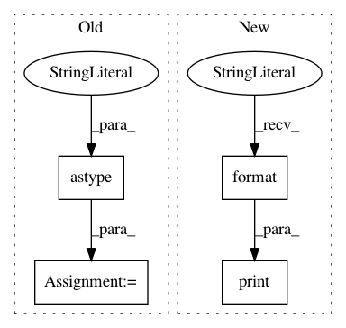

87ff637109458f019eb574c798fcf28fc244f735,snntoolbox/model_libs/keras_input_lib.py,,evaluate,#Any#Any#Any#Any#,247
Before Change
x_batch, y_batch = dataflow.next()
if True: // Only for imagenet!
print("Preprocessing input for ImageNet")
x_batch = np.add(np.multiply(x_batch, 2. / 255.), - 1.).astype(
"float32")
loss, acc = val_fn(x_batch, y_batch, verbose=0)
score[0] += loss
score[1] += acc
score[0] /= batches
After Change
num_to_test = len(x_test) if x_test is not None else settings["num_to_test"]
print("Using {} samples to evaluate input model.".format(num_to_test))
if x_test is not None:
score = val_fn(x_test, y_test, verbose=0)
else:
In pattern: SUPERPATTERN
Frequency: 4
Non-data size: 4
Instances
Project Name: NeuromorphicProcessorProject/snn_toolbox
Commit Name: 87ff637109458f019eb574c798fcf28fc244f735
Time: 2017-04-10
Author: bodo.rueckauer@gmail.com
File Name: snntoolbox/model_libs/keras_input_lib.py
Class Name:
Method Name: evaluate
Project Name: nipy/dipy
Commit Name: 1b46c1cb1650ef0b332cd2e3a84b3c0e4a764975
Time: 2017-01-07
Author: marc.cote.19@gmail.com
File Name: dipy/tracking/benchmarks/bench_streamline.py
Class Name:
Method Name: bench_length
Project Name: NeuromorphicProcessorProject/snn_toolbox
Commit Name: 87ff637109458f019eb574c798fcf28fc244f735
Time: 2017-04-10
Author: bodo.rueckauer@gmail.com
File Name: snntoolbox/model_libs/lasagne_input_lib.py
Class Name:
Method Name: evaluate
Project Name: nipy/dipy
Commit Name: d7dcfeeb5b50fc3f9cf670b2b148efafef0ad3b7
Time: 2017-10-05
Author: marc.cote.19@gmail.com
File Name: dipy/tracking/benchmarks/bench_streamline.py
Class Name:
Method Name: bench_set_number_of_points